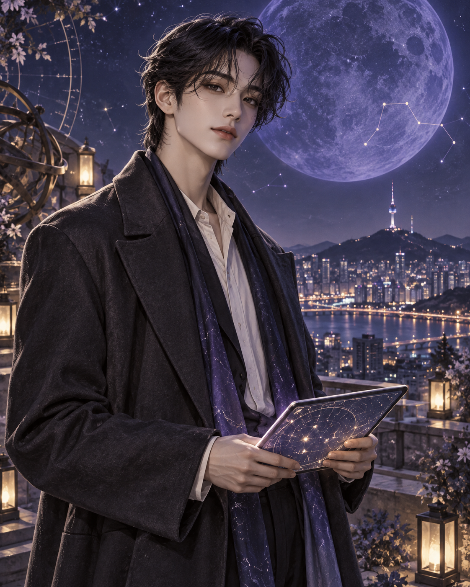
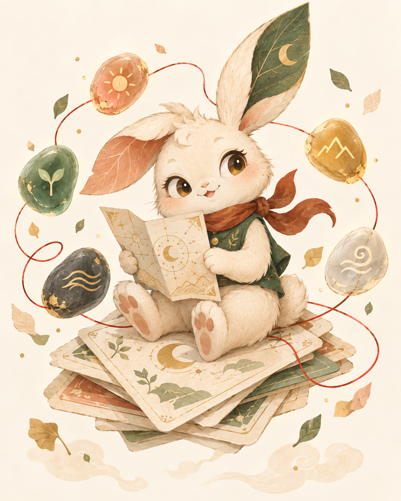

01 / 다정한 기록가
내 이야기를 들어주는 사람
종이, 실, 녹색을 쓰는 차분한 안내자. 사주 풀이를 한 장의 편지처럼 전달하는 톤에 어울립니다.
감성 리포트 · 따뜻한 신뢰 · 긴 글 읽기GYEOL / CHARACTER STUDIES
첫 화면과 인스타 광고에 등장할 캐릭터의 방향 시안입니다. 아직 어느 것도 확정하지 않았습니다.
종이, 실, 녹색을 쓰는 차분한 안내자. 사주 풀이를 한 장의 편지처럼 전달하는 톤에 어울립니다.
감성 리포트 · 따뜻한 신뢰 · 긴 글 읽기
도시와 별자리의 대비가 강한 시안. 광고 첫 장면에서 눈을 끌고 영상으로 확장하기 쉽습니다.
강한 첫인상 · 영상 광고 · 이야기 연출
작은 동물 캐릭터가 질문을 건네는 방향. 표정, 스티커, 짧은 영상 시리즈로 넓히기 좋습니다.
친근한 캐릭터 · 공유 콘텐츠 · 굿즈 확장SHORTLIST / SECOND PASS
같은 인물이 다른 장면에 등장하는 시안입니다. 캐릭터의 표정과 영상화 가능성을 비교해보세요.